अध्याय 9: एक दल के प्रभुत्व का दौर
(Era of One-party Dominance) - NCERT Complete Master Notes
1. लोकतंत्र स्थापित करने की चुनौती (The Democratic Challenge)
प्रिय विद्यार्थियों, 1947 में स्वतंत्रता मिलने के बाद भारत के सामने सबसे बड़ी चुनौती स्वयं को एक राष्ट्र के रूप में चलाने की थी। दुनिया के कई नव-स्वतंत्र देशों में गरीबी और अशिक्षा के कारण लोकतंत्र असफल हो गया और वहाँ सैनिक शासन या तानाशाही स्थापित हो गई। परंतु भारतीय नेताओं ने एक कठिन लेकिन दृढ़ मार्ग चुना—सच्चे लोकतंत्र (True Democracy) का मार्ग।
चुनाव आयोग का गठन (जनवरी 1950): भारत के पहले मुख्य चुनाव आयुक्त सुकुमार सेन (Sukumar Sen) बने। भारत जैसे विशाल, गरीब और अनपढ़ देश में निष्पक्ष चुनाव कराना एक अत्यंत जटिल और अभूतपूर्व चुनौती थी।
सुकुमार सेन (1898-1963)
योगदान: स्वतंत्र भारत के पहले मुख्य चुनाव आयुक्त (First Chief Election Commissioner)। उन्होंने 1952 और 1957 के पहले दो ऐतिहासिक आम चुनावों का सफल संचालन किया। एक गरीब और निरक्षर राष्ट्र में लोकतंत्र की नींव रखने और चुनावी प्रणाली तैयार करने का श्रेय उन्हीं को जाता है। बाद में वे सूडान के भी पहले चुनाव आयुक्त बने।
2. पहले आम चुनाव (1952) की प्रमुख ऐतिहासिक चुनौतियाँ:
- (i) विशाल और निरक्षर मतदाता सूची: उस समय कुल 17 करोड़ मतदाता थे, जिनमें से 85% निरक्षर (अनपढ़) थे। उनके लिए विशेष प्रतीकों (Symbols) वाली पेटियों की नई पद्धति विकसित करनी पड़ी।
- (ii) निर्वाचन क्षेत्रों का सीमांकन: पूरे देश को स्वतंत्र और निष्पक्ष ढंग से संसदीय क्षेत्रों में बांटना एक बहुत बड़ी भौगोलिक चुनौती थी।
- (iii) महिलाओं के पंजीकरण की समस्या: पहली मतदाता सूची में लगभग 40 लाख महिलाओं के नाम दर्ज ही नहीं हो पाए थे। उन्हें केवल 'फलां की बीवी' या 'फलां की बेटी' लिखा गया था। सुकुमार सेन ने इस सूची को खारिज किया और दोबारा शुद्धिकरण कराया।
- (iv) चुनाव कर्मियों का प्रशिक्षण: देश भर में चुनाव कराने के लिए 3 लाख से अधिक पोलिंग अधिकारियों और चुनाव कर्मियों को प्रशिक्षित करना पड़ा।
3. 'इतिहास का सबसे बड़ा जुआ' (The Greatest Gamble in History)
विदेशी समीक्षकों और अखबारों ने भारतीय चुनाव को लोकतंत्र के इतिहास का सबसे बड़ा जुआ कहा था। एक संपादक ने लिखा कि नेहरू "अपने जीवित रहते ही यह देख लेंगे और पछताएंगे कि भारत में सार्वभौम वयस्क मताधिकार असफल रहा।" लेकिन भारत ने 1952 के पहले आम चुनाव को शानदार ढंग से संपन्न कराकर पूरी दुनिया को अचंभित कर दिया और साबित किया कि लोकतंत्र कहीं भी सफल हो सकता है।
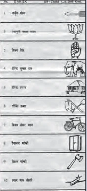
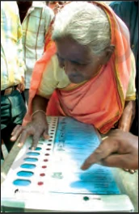
🗳️ ऐतिहासिक चुनाव चिह्न (1952 प्रथम आम चुनाव)
प्रथम आम चुनाव (1952) में भारत की एक बड़ी आबादी (लगभग 85%) निरक्षर थी। मतदाताओं की सुविधा के लिए प्रत्येक उम्मीदवार के लिए अलग मतपेटी रखी गई, जिस पर उनका विशिष्ट चुनाव चिह्न (Election Symbol) अंकित था। प्रमुख दलों के मूल चुनाव चिह्न निम्नलिखित थे:

1. भारतीय राष्ट्रीय कांग्रेस (INC) - "दो बैलों की जोड़ी"
विवरण: आजादी के बाद शुरुआती दौर (1952 से 1969) में कांग्रेस का आधिकारिक चुनाव चिह्न 'दो बैलों की जोड़ी' (Pair of Yoked Bullocks) था। यह देश के किसानों, कृषि प्रधान अर्थव्यवस्था और विकास की बुनियादी शक्ति का प्रतिनिधित्व करता था।
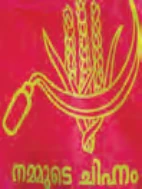
2. भारतीय कम्युनिस्ट पार्टी (CPI) - "हँसिया और बाली"
विवरण: कम्युनिस्ट पार्टी का चुनाव चिह्न 'हँसिया और गेहूँ की बाली' (Sickle and Ears of Corn) था, जो मजदूर वर्ग और किसानों की एकता का प्रतीक था।
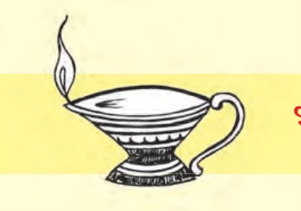
3. भारतीय जनसंघ (BJS) - "दीपक"
विवरण: जनसंघ (जिससे आज की भाजपा उपजी है) का मूल चुनाव चिह्न 'दीपक' (Diya / Oil Lamp) था। यह प्रकाश, ज्ञान और भारतीय संस्कृति की परंपरा को दर्शाता था।
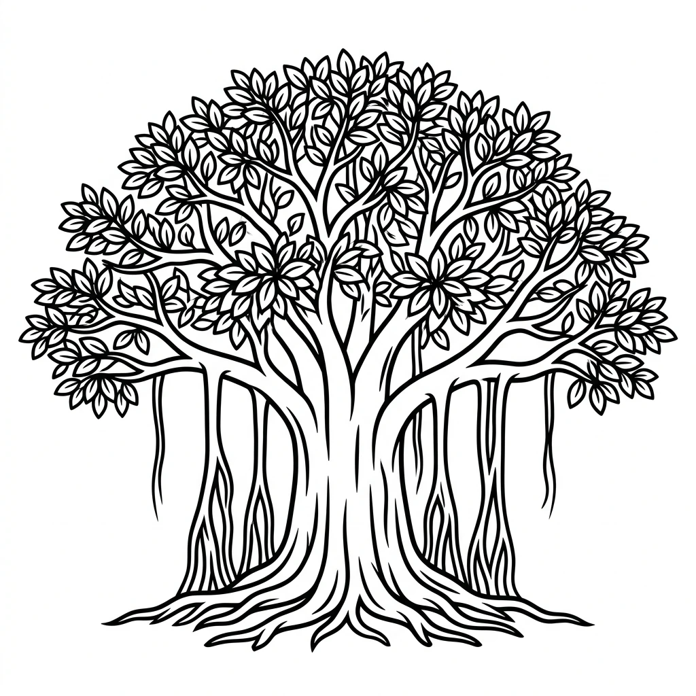
4. सोशलिस्ट पार्टी (Socialist Party) - "बरगद का पेड़"
विवरण: सोशलिस्ट पार्टी का आधिकारिक चुनाव चिह्न 'बरगद का पेड़' (Banyan Tree) था, जो समाज की गहरी जड़ों और सभी को आश्रय देने वाली समाजवादी नीतियों का प्रतिनिधित्व करता था।
5. शेड्यूल्ड कास्ट्स फेडरेशन (SCF) - "हाथी"
विवरण: डॉ. भीमराव अम्बेडकर की पार्टी 'शेड्यूल्ड कास्ट्स फेडरेशन' का चुनाव चिह्न 'हाथी' (Elephant) था (जो बाद में बहुजन समाज पार्टी - BSP का भी प्रतीक बना)। यह शोषित वर्ग की सामूहिक शक्ति का प्रतिनिधित्व करता था।
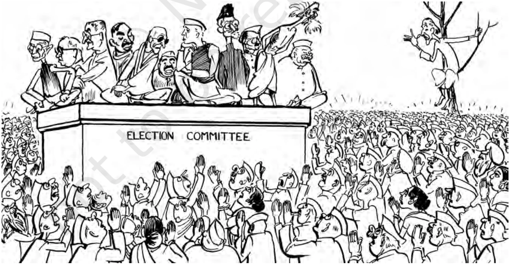
विवरण: प्रसिद्ध कार्टूनिस्ट शंकर द्वारा बनाया गया यह कार्टून 1951 में कांग्रेस चुनाव समिति (CEC) द्वारा पार्टी उम्मीदवारों को चुनने की मारामारी को दर्शाता है।
बोर्ड परीक्षा विशेष कार्टून आधारित प्रश्नोत्तर (CBSE Board Q&A):
• प्रश्न 1: यह कार्टून किस राजनीतिक दल की स्थिति को प्रदर्शित करता है?
• उत्तर: यह कार्टून भारतीय राष्ट्रीय कांग्रेस (INC) की स्थिति को दिखाता है, जहाँ नेहरू की अध्यक्षता वाली चुनाव समिति से टिकट पाने के लिए उम्मीदवारों की भारी भीड़ लगी है।
• प्रश्न 2: 'नेहरू का निर्णय' चुनाव टिकट पाने में कितना महत्वपूर्ण था?
• उत्तर: पहले तीन आम चुनावों के दौर में कांग्रेस से टिकट मिलना ही चुनाव जीतने की गारंटी माना जाता था। नेहरू का निर्णय ही अंतिम और सर्वोपरि होता था।
भाग 2: पहले तीन चुनाव और कांग्रेस की असाधारण जीत (1952, 1957, 1962)
स्वतंत्र भारत के पहले तीन आम चुनावों में कांग्रेस का दबदबा इतना विशाल था कि इसे भारतीय राजनीति में 'एक दलीय प्रभुत्व का युग' कहा गया।
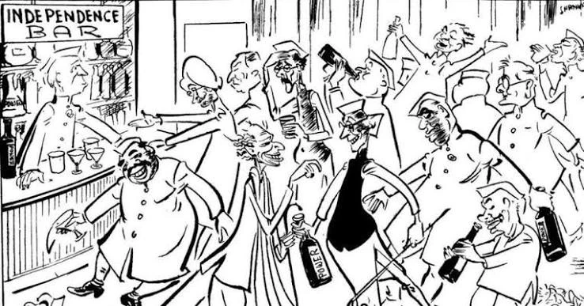
विवरण: प्रसिद्ध कार्टूनिस्ट शंकर द्वारा बनाया गया यह ऐतिहासिक कार्टून स्वतंत्रता मिलने के बाद देश के मंत्रियों और राजनेताओं के बीच पोर्टफोलियो (मंत्रालयों) और सत्ता (Power) के बंटवारे पर एक तीखा व्यंग्य करता है। नेहरू स्वतंत्रता रूपी बार (Independence Bar) के काउंटर पर हैं और नेता "पावर" (Power) की बोतलों से उत्सव मना रहे हैं।
बोर्ड परीक्षा विशेष कार्टून आधारित प्रश्नोत्तर (CBSE Board Q&A):
• प्रश्न 1: यह कार्टून किस समय और किस भावना को प्रदर्शित करता है?
• उत्तर: यह कार्टून 1947 में देश को स्वतंत्रता मिलने के ठीक बाद का है। यह नेताओं में सत्ता और मंत्रालयों को पाने के प्रति अति-उत्साह और सत्ता के नशे (Power) को हास्यप्रद तरीके से दिखाता है।
• प्रश्न 2: काउंटर पर खड़ा व्यक्ति कौन है और वह क्या कर रहा है?
• उत्तर: काउंटर के पीछे प्रधानमंत्री जवाहरलाल नेहरू खड़े हैं, जो सत्ता और मंत्रालयों के बंटवारे को नियंत्रित व वितरित कर रहे हैं।
1. चुनावी आँकड़ों में कांग्रेस का आधिपत्य:
- प्रथम आम चुनाव (1952): कुल 489 सीटों में से कांग्रेस ने 364 सीटें जीतीं। विपक्षी कम्युनिस्ट पार्टी (CPI) केवल 16 सीटों पर सिमट गई।
- द्वितीय आम चुनाव (1957): कांग्रेस ने लोकसभा की 494 सीटों में से 371 सीटें जीतीं।
- तृतीय आम चुनाव (1962): कांग्रेस ने लोकसभा की 494 सीटों में से 361 सीटें जीतीं।
इस प्रकार केंद्र के साथ-साथ देश के लगभग सभी राज्यों में कांग्रेस की ही सरकारें बनीं। केवल 1957 में केरल में कम्युनिस्टों ने गैर-कांग्रेसी सरकार बनाई थी।
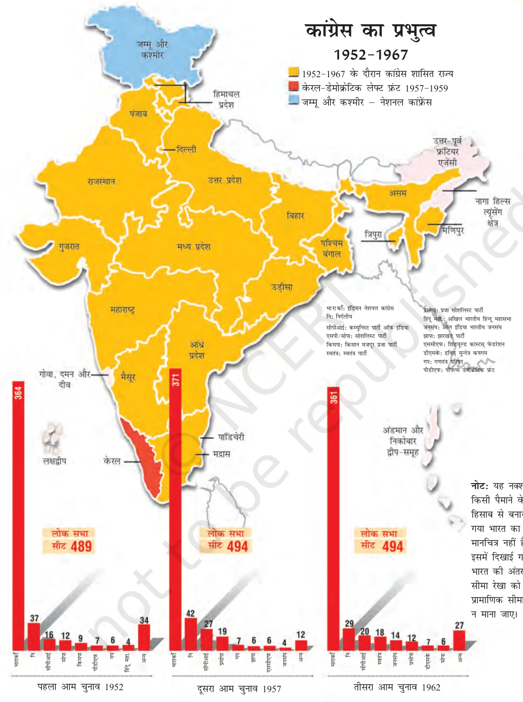
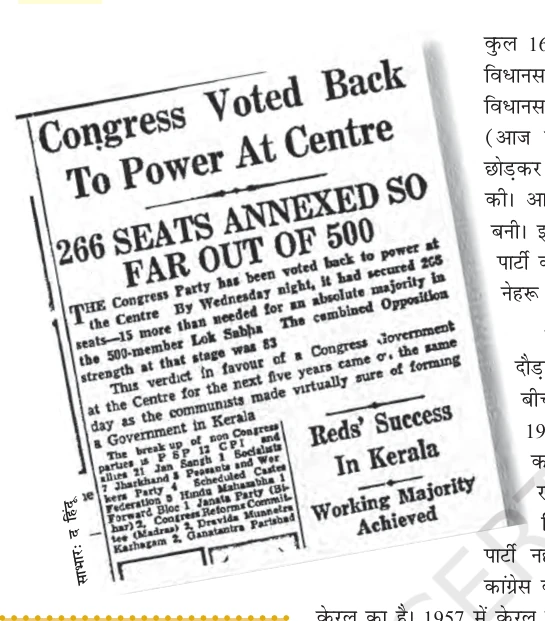
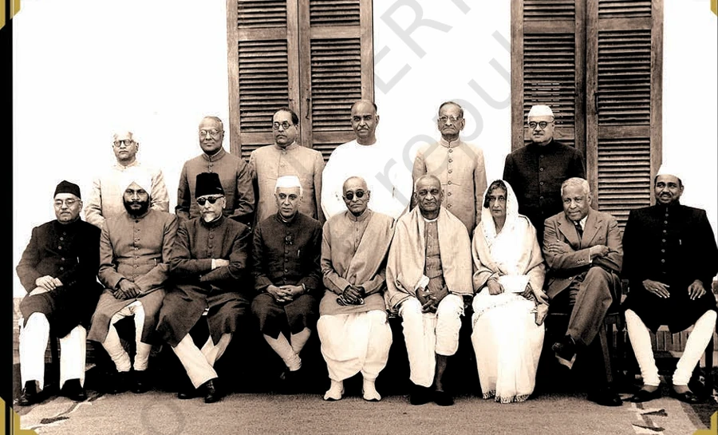
विवरण: 1948 में चक्रवर्ती राजगोपालाचारी के स्वतंत्र भारत के प्रथम भारतीय गवर्नर-जनरल के पद की शपथ ग्रहण के बाद स्वतंत्र भारत का प्रथम नेहरू मंत्रिमंडल।
मंत्रिमंडल के सदस्यों की सूची (बाएँ से दाएँ):
• बैठे हुए (Sitting): रफ़ी अहमद किदवई (संचार मंत्री), बलदेव सिंह (रक्षा मंत्री), मौलाना आज़ाद (शिक्षा मंत्री), प्रधानमंत्री जवाहरलाल नेहरू, चक्रवर्ती राजगोपालाचारी (गवर्नर-जनरल), सरदार वल्लभभाई पटेल (गृह मंत्री), राजकुमारी अमृत कौर (स्वास्थ्य मंत्री), जॉन मथाई (रेलवे मंत्री), जगजीवन राम (श्रम मंत्री)।
• खड़े हुए (Standing): श्री एन.वी. गाडगिल (निर्माण, खान व ऊर्जा मंत्री), श्री के.सी. नियोगी (राहत व पुनर्वास मंत्री), डॉ. बी.आर. अम्बेडकर (कानून मंत्री), श्यामा प्रसाद मुखर्जी (उद्योग एवं आपूर्ति मंत्री), एन. गोपालास्वामी आयंगर (बिना विभाग के मंत्री, बाद में रेलवे), जयरामदास दौलतराम (खाद्य एवं कृषि मंत्री)।
📋 प्रथम नेहरू मंत्रिमंडल (1948) - सभी मंत्रियों का परिचय:
| मंत्री का नाम (Name) | विभाग (Portfolio) | प्रमुख योगदान व संक्षिप्त परिचय |
|---|---|---|
| जवाहरलाल नेहरू | प्रधानमंत्री, विदेश तथा राष्ट्रमंडल संबंध | स्वतंत्र भारत के प्रथम प्रधानमंत्री। उन्होंने भारत की विदेश नीति के रूप में गुटनिरपेक्षता (Non-Alignment) की नींव रखी, लोकतांत्रिक समाजवाद को बढ़ावा दिया और योजनाबद्ध विकास (पंचवर्षीय योजनाओं) की शुरुआत की। |
| सरदार वल्लभभाई पटेल | उप-प्रधानमंत्री, गृह, सूचना व प्रसारण | भारत के प्रथम गृह मंत्री। उन्होंने भारत की आजादी के बाद 560 से अधिक रियासतों का देश में ऐतिहासिक एकीकरण कराया, जिसके कारण उन्हें 'भारत का लौह पुरुष' (Iron Man of India) कहा जाता है। |
| मौलाना अबुल कलाम आज़ाद | शिक्षा मंत्री (Education) | महान स्वतंत्रता सेनानी, हिंदू-मुस्लिम एकता के समर्थक और स्वतंत्र भारत के पहले शिक्षा मंत्री। उन्होंने देश में आईआईटी (IIT), यूजीसी (UGC) और सांस्कृतिक परिषदों की स्थापना कर राष्ट्रीय शिक्षा प्रणाली का ढांचा तैयार किया। |
| डॉ. बी.आर. अम्बेडकर | कानून मंत्री (Law) | संविधान की प्रारूप समिति के अध्यक्ष और भारत के प्रथम कानून मंत्री। उन्होंने भारतीय संविधान के निर्माण में मुख्य भूमिका निभाई और शोषितों व दलितों के सामाजिक-आर्थिक अधिकारों के लिए ऐतिहासिक संघर्ष किया। |
| राजकुमारी अमृत कौर | स्वास्थ्य मंत्री (Health) | स्वतंत्र भारत के मंत्रिमंडल में शामिल होने वाली पहली महिला मंत्री। उन्होंने देश में स्वास्थ्य सेवाओं के विकास और अखिल भारतीय आयुर्विज्ञान संस्थान (AIIMS) जैसी शीर्ष चिकित्सा संस्थाओं के निर्माण का नेतृत्व किया। |
| रफ़ी अहमद किदवई | संचार, खाद्य एवं कृषि | उत्तर प्रदेश के प्रमुख कांग्रेस नेता। संचार मंत्री के रूप में उन्होंने 'नाइट एयरमेल सेवा' (Night Airmail) और रविवार की छुट्टी जैसी डाक सुधार योजनाएं लागू कीं और खाद्यान्न राशनिंग व्यवस्था का सफल संचालन किया। |
| श्यामा प्रसाद मुखर्जी | उद्योग एवं आपूर्ति मंत्री | वरिष्ठ राष्ट्रवादी नेता। उन्होंने औद्योगिक नीति के क्रियान्वयन में मुख्य भूमिका निभाई। कश्मीर मुद्दे पर मतभेद के बाद इस्तीफा दिया और 1951 में 'भारतीय जनसंघ' की स्थापना की। |
| चक्रवर्ती राजगोपालाचारी | गवर्नर-जनरल (1948-1950) | स्वतंत्र भारत के पहले और अंतिम भारतीय गवर्नर-जनरल। वे देश के पहले 'भारत रत्न' से सम्मानित नेता थे। बाद में उन्होंने नेहरू की नीतियों के विरोध में 'स्वतंत्र पार्टी' की स्थापना की। |
| सरदार बलदेव सिंह | रक्षा मंत्री (Defense) | स्वतंत्र भारत के प्रथम रक्षा मंत्री। विभाजन के दौरान भारतीय सेना के सफल पुनर्गठन और 1947-48 के भारत-पाकिस्तान युद्ध में देश की सीमाओं की रक्षा करने में उन्होंने रक्षा मंत्रालय का ऐतिहासिक नेतृत्व किया। |
| डॉ. जॉन मथाई | रेलवे व वित्त मंत्री | विख्यात अर्थशास्त्री। स्वतंत्र भारत का पहला रेल बजट और गणतंत्र भारत का पहला आम बजट पेश करने वाले प्रथम वित्त मंत्री। उन्होंने सांख्यिकी और योजना निर्माण को मजबूत किया। |
| बाबू जगजीवन राम | श्रम मंत्री (Labour) | देश के पहले श्रम मंत्री और प्रमुख दलित नेता (बाबूजी)। उन्होंने मजदूरों के कल्याण के लिए कई कानून पास किए और लंबे समय तक रक्षा व कृषि मंत्रालयों का भी कुशल नेतृत्व किया। |
| श्री एन.वी. गाडगिल | कार्य, खान व ऊर्जा मंत्री | महाराष्ट्र के प्रमुख कांग्रेस नेता। उन्होंने देश की सिंचाई परियोजनाओं, बड़ी बांध परियोजनाओं (जैसे भाखड़ा नांगल) और बिजली उत्पादन के शुरुआती ढांचे को तैयार करने में अहम भूमिका निभाई। |
| श्री के.सी. नियोगी | राहत एवं पुनर्वास मंत्री | विभाजन के समय भारत आए लाखों शरणार्थियों के राहत और पुनर्वास कार्यों के प्रमुख योजनाकार। वे स्वतंत्र भारत के पहले वित्त आयोग (First Finance Commission) के अध्यक्ष नियुक्त हुए। |
| एन. गोपालास्वामी आयंगर | बिना विभाग के मंत्री | संविधान सभा की ड्राफ्टिंग कमेटी के सदस्य। उन्होंने जम्मू-कश्मीर राज्य के विलय और भारतीय संविधान में अनुच्छेद 370 के प्रारूप को तैयार करने में सर्वप्रमुख भूमिका निभाई। |
| जयरामदास दौलतराम | खाद्य एवं कृषि मंत्री | सिंध क्षेत्र के प्रमुख गांधीवादी नेता। उन्होंने स्वतंत्र भारत के खाद्य संकट का प्रबंधन किया और बाद में बिहार तथा असम के राज्यपाल के रूप में सेवाएं दीं। |
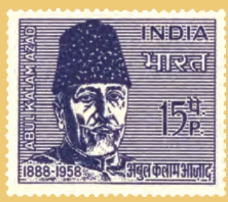
मौलाना अबुल कलाम आज़ाद (1888-1958)
योगदान: महान स्वतंत्रता सेनानी, इस्लाम के प्रकांड विद्वान और हिंदू-मुस्लिम एकता के प्रबल पैरोकार। वे देवबंद स्कूल से जुड़े थे और उन्होंने विभाजन का डटकर विरोध किया। वे संविधान सभा के सदस्य थे और स्वतंत्र भारत के पहले शिक्षा मंत्री (First Education Minister) बने। भारत में उच्च शिक्षा व वैज्ञानिक अनुसंधानों (UGC & IIT) की नींव रखने में उनका योगदान अमूल्य है।
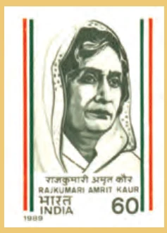
राजकुमारी अमृत कौर (1889-1964)
योगदान: कपूरथला के राजपरिवार से ताल्लुक रखने वाली गांधीवादी स्वतंत्रता सेनानी। वे महात्मा गांधी की सचिव रहीं और संविधान निर्माण में सक्रिय भूमिका निभाई। वे स्वतंत्र भारत के पहले मंत्रिमंडल में पहली महिला स्वास्थ्य मंत्री (First Health Minister) बनीं। उन्होंने देश में एम्स (AIIMS) जैसी शीर्ष चिकित्सा संस्थाओं की स्थापना की।
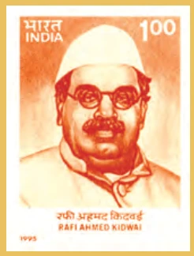
रफ़ी अहमद किदवई (1894-1954)
योगदान: उत्तर प्रदेश के प्रमुख कांग्रेस नेता। स्वतंत्र भारत के प्रथम मंत्रिमंडल में वे संचार मंत्री (Communications Minister) और बाद में खाद्य एवं कृषि मंत्री बने। उन्होंने डाक और नागरिक उड्डयन क्षेत्रों में महत्वपूर्ण सुधार किए तथा खाद्यान्न संकट के प्रबंधन में अभूतपूर्व सफलता प्राप्त की।
🏆 कांग्रेस के एकतरफा प्रभुत्व के चार मुख्य कारण:
- 1. राष्ट्रीय आंदोलन की विरासत: कांग्रेस को स्वतंत्रता आंदोलन की 'उत्तराधिकारी' माना जाता था। जनता के मन में यह देश को आजाद कराने वाली एकमात्र पार्टी थी।
- 2. करिश्माई और लोकप्रिय नेतृत्व: पंडित जवाहरलाल नेहरू का व्यक्तित्व अत्यंत प्रभावशाली था। वे देश के हर कोने में अत्यंत लोकप्रिय थे।
- 3. देशव्यापी संगठनात्मक नेटवर्क: कांग्रेस का संगठन देश के सबसे छोटे गाँवों तक फैला हुआ था, जबकि विपक्षी दलों का अस्तित्व केवल शहरों या चुनिंदा वर्गों तक ही सीमित था।
- 4. गठबंधन और समावेशी स्वरूप: कांग्रेस ने अपने भीतर वामपंथी, दक्षिणपंथी, अमीर-गरीब, उच्च वर्ग और दलित सभी को एक साथ जोड़ रखा था।
भाग 3: कांग्रेस एक वैचारिक एवं सामाजिक गठबंधन के रूप में (Coalition of Factions)
Congress की अद्वितीय सफलता का रहस्य यह था कि वह केवल एक राजनीतिक दल नहीं, बल्कि एक 'विशाल सामाजिक व वैचारिक गठबंधन' (Big Umbrella) थी।
कांग्रेस का सतरंगी स्वरूप:
सामाजिक गठबंधन: कांग्रेस में किसान, उद्योगपति, शहर के मध्यम वर्ग, मजदूर, हिंदू, मुसलमान, उच्च जातियाँ और दलित—सभी के हित समाहित थे।
वैचारिक गठबंधन: कांग्रेस अपने भीतर उग्र राष्ट्रवादियों, उदारवादियों, समाजवादियों और यहाँ तक कि रूढ़िवादियों को भी स्थान देती थी। दल के भीतर अपनी बात रखने की छूट थी, जिससे गुटीय प्रतिस्पर्धा (Competition within Factions) उत्पन्न हुई।
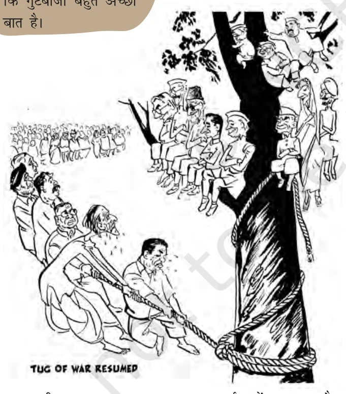
विवरण: कार्टूनिस्ट शंकर द्वारा खींचा गया यह प्रसिद्ध कार्टून नेहरू सरकार और कमजोर विपक्ष के बीच शक्ति असंतुलन को मजाकिया तरीके से दिखाता है।
बोर्ड परीक्षा विशेष कार्टून आधारित प्रश्नोत्तर (CBSE Board Q&A):
• प्रश्न 1: पेड़ पर बैठे नेहरू और उनके मंत्रियों के साथ पेड़ के नीचे खड़े लोग क्या कर रहे हैं?
• उत्तर: पेड़ पर नेहरू और उनके कैबिनेट सहयोगी सुरक्षित बैठे हैं, जबकि पेड़ के नीचे खड़े विपक्षी नेता (जैसे कृपलानी, डांगे आदि) उन्हें एक पतली रस्सी से खींचकर गिराने की निरर्थक कोशिश कर रहे हैं।
• प्रश्न 2: यह कार्टून उस समय के भारतीय लोकतंत्र के बारे में क्या बताता है?
• उत्तर: यह दर्शाता है कि नेहरू सरकार की तुलना में विपक्षी दल संख्या और प्रभाव में बहुत कमजोर व असहाय थे। असली राजनीतिक प्रतिस्पर्धा कांग्रेस के बाहर नहीं, बल्कि कांग्रेस के भीतर के गुटों में थी।
🛡️ 'कांग्रेस प्रणाली' (The Congress System)
प्रसिद्ध राजनीतिक विश्लेषक रजनी कोठारी (Rajni Kothari) ने इस अनूठे चुनावी दौर को 'कांग्रेस प्रणाली' का नाम दिया। उनके अनुसार:
- 1. कांग्रेस ही वास्तविक सत्ता थी और कांग्रेस के भीतर के गुट ही विपक्ष का काम करते थे।
- 2. विपक्षी दल इतने कमजोर थे कि वे नीतियों को बदलने के लिए सीधे विरोध करने के बजाय कांग्रेस के भीतर के गुटों को प्रभावित करते थे।
- 3. भारतीय राजनीति कांग्रेस के इर्द-गिर्द ही घूमती थी।
भाग 4: प्रमुख विपक्षी दलों का उदय और उनकी विचारधाराएँ (Rise of Opposition)
यद्यपि कांग्रेस अजेय थी, फिर भी भारत में एक जीवंत और सैद्धांतिक विपक्ष धीरे-धीरे आकार ले रहा था। बोर्ड परीक्षाओं के लिए चारों प्रमुख विपक्षी दलों का वैचारिक अंतर जानना अनिवार्य है:
1. प्रमुख विपक्षी दल और उनके मूलभूत सिद्धांत:
(a) सोशलिस्ट पार्टी (Socialist Party):
नेतृत्व: जयप्रकाश नारायण, राममनोहर लोहिया, अच्युत पटवर्धन और आचार्य नरेंद्र देव।
सिद्धांत: वे 'लोकतांत्रिक समाजवाद' (Democratic Socialism) के समर्थक थे। वे कांग्रेस की इस बात के लिए आलोचना करते थे कि वह पूंजीपतियों और जमींदारों का पक्ष लेती है और गरीबों की उपेक्षा करती है।
(b) भारतीय कम्युनिस्ट पार्टी (Communist Party of India - CPI):
नेतृत्व: ए. के. गोपालन, ई. एम. एस. नम्बूदरीपाद, पी. सी. जोशी, अजय घोष।
सिद्धांत: मार्क्सवादी-लेनिनवादी विचारधारा। वे उत्पादन के साधनों पर राज्य के नियंत्रण और तीव्र भूमि सुधारों के पक्षधर थे। 1964 में चीन-भारत युद्ध के बाद चीन समर्थक धड़े ने CPI(M) बना ली, जबकि मूल दल CPI सोवियत संघ का समर्थक रहा।
(c) भारतीय जनसंघ (Bharatiya Jana Sangh - BJS):
नेतृत्व: डॉ. श्यामा प्रसाद मुखर्जी, दीनदयाल उपाध्याय, बलराज मधोक।
सिद्धांत: स्थापना 1951 में हुई। उनका नारा था—"एक देश, एक संस्कृति और एक राष्ट्र"। वे भारत और पाकिस्तान को मिलाकर 'अखंड भारत' बनाने के समर्थक थे। उन्होंने अंग्रेजी को हटाकर हिंदी को राजभाषा बनाने और परमाणु हथियार विकसित करने की पैरवी की। यही पार्टी आगे चलकर आज की भारतीय जनता पार्टी (BJP) बनी।
(d) स्वतंत्र पार्टी (Swatantra Party):
नेतृत्व: सी. राजगोपालाचारी, के. एम. मुंशी, एन. जी. रंगा और मीनू मसानी।
सिद्धांत: स्थापना 1959 में हुई। वे 'मुक्त व्यापार' (Free Economy), निजी क्षेत्र को छूट और लाइसेंस-परमिट राज की समाप्ति के प्रबल पक्षधर थे। वे गुटनिरपेक्षता की नीति के विरोधी थे और अमेरिका से मजबूत संबंधों के समर्थक थे।
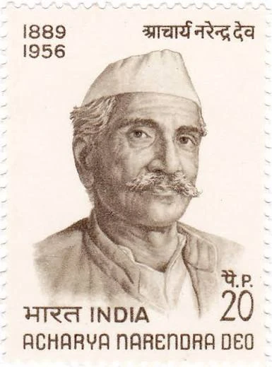
आचार्य नरेन्द्र देव (1889-1956)
योगदान: प्रख्यात समाजवादी नेता और विद्वान। उन्होंने 1934 में 'कांग्रेस सोशलिस्ट पार्टी' (CSP) की स्थापना में मुख्य भूमिका निभाई। आजादी के बाद सोशलिस्ट पार्टी का नेतृत्व किया। वे बौद्ध दर्शन के महान पंडित थे और किसान आंदोलनों के प्रमुख संगठनकर्ता थे।
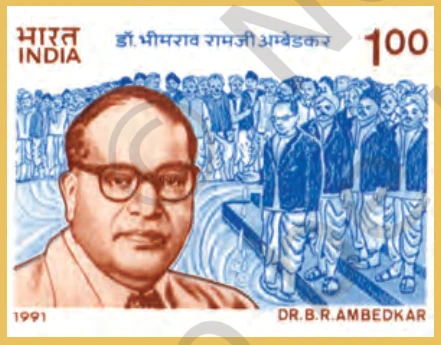
डॉ. भीमराव रामजी अम्बेडकर (1891-1956)
योगदान: भारतीय संविधान के निर्माता (Father of Indian Constitution)। शोषितों और दलितों के उत्थान के लिए आजीवन संघर्ष करने वाले महान नेता व कानूनविद। वे नेहरू के पहले मंत्रिमंडल में कानून मंत्री (Law Minister) बने, परंतु हिंदू कोड बिल पर मतभेद के कारण 1951 में त्यागपत्र दे दिया। उन्होंने 'शेड्यूल्ड कास्ट्स फेडरेशन' और बाद में 'रिपब्लिकन पार्टी ऑफ इंडिया' की स्थापना की। अपने जीवन के अंतिम वर्षों में उन्होंने बौद्ध धर्म स्वीकार कर लिया।
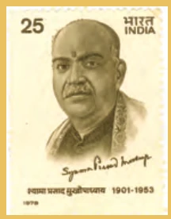
श्यामा प्रसाद मुखर्जी (1901-1953)
योगदान: महान राष्ट्रवादी विचारक, हिंदू महासभा के नेता। वे स्वतंत्र भारत के पहले राष्ट्रीय मंत्रिमंडल में उद्योग एवं आपूर्ति मंत्री (Minister for Industry) बने। कश्मीर को विशेष दर्जा देने (अनुच्छेद 370) के विरोध में कैबिनेट से इस्तीफा दिया और 1951 में भारतीय जनसंघ (BJS) की स्थापना की। कश्मीर में बिना परमिट प्रवेश के सत्याग्रह के दौरान उन्हें हिरासत में लिया गया, जहाँ उनका देहांत हो गया। उनका प्रसिद्ध नारा था—"एक देश में दो विधान, दो प्रधान और दो निशान नहीं चलेंगे।"
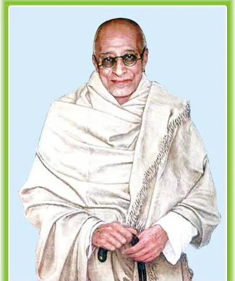
सी. राजगोपालाचारी (राजाजी) (1878-1972)
योगदान: वरिष्ठ कांग्रेस नेता, महात्मा गांधी के अत्यंत करीबी सलाहकार। वे स्वतंत्र भारत के पहले और अंतिम भारतीय गवर्नर-जनरल बने। वे देश के सर्वोच्च नागरिक सम्मान 'भारत रत्न' के पहले प्राप्तकर्ताओं में से एक थे। 1959 में नेहरू की समाजवादी आर्थिक नीतियों के विरोध में उन्होंने दक्षिणपंथी स्वतंत्र पार्टी की स्थापना की।
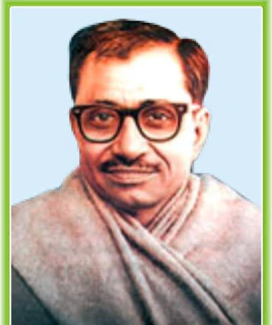
पंडित दीनदयाल उपाध्याय (1916-1968)
योगदान: भारतीय जनसंघ के संस्थापक सदस्य, लंबे समय तक महासचिव और बाद में अध्यक्ष। उन्होंने 'एकात्म मानववाद' (Integral Humanism) का दार्शनिक सिद्धांत प्रतिपादित किया, जो मानव को केंद्र में रखकर सामाजिक व आर्थिक नीतियों के निर्धारण की वकालत करता है। वे अंत्योदय (समाज के अंतिम व्यक्ति के उदय) के प्रणेता थे।
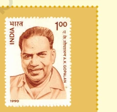
ए. के. गोपालन (1904-1977)
योगदान: केरल के प्रमुख कम्युनिस्ट नेता। उन्होंने राजनीतिक जीवन की शुरुआत एक कांग्रेस कार्यकर्ता के रूप में की, परंतु 1939 में वे कम्युनिस्ट पार्टी में शामिल हो गए। 1964 में पार्टी विभाजन के बाद उन्होंने मार्क्सवादी कम्युनिस्ट पार्टी (CPI-M) को मजबूत करने में मुख्य भूमिका निभाई। वे देश के एक अत्यंत सम्मानित और कुशल सांसद थे, जो 1952 के प्रथम आम चुनाव से लेकर लगातार लोकसभा सदस्य रहे।
भाग 5: केरल में कम्युनिस्ट सरकार और प्रथम लोकतांत्रिक पराजय (1957-1959)
1957 में केरल के विधानसभा चुनावों में कांग्रेस को पहली बार करारी शिकस्त मिली, जिसने भारतीय राजनीति में नए आयाम जोड़े।
1. लोकतांत्रिक ढंग से निर्वाचित पहली कम्युनिस्ट सरकार:
1957 के विधानसभा चुनावों में भारतीय कम्युनिस्ट पार्टी (CPI) ने केरल की 126 में से 60 सीटें जीतकर इतिहास रचा। उन्होंने निर्दलीयों के सहयोग से सरकार बनाई।
ई. एम. एस. नम्बूदरीपाद (E.M.S. Namboodiripad): केरल के मुख्यमंत्री बने। विश्व इतिहास में यह पहली बार हुआ जब कोई कम्युनिस्ट सरकार पूर्णतः लोकतांत्रिक और स्वतंत्र चुनावों के जरिए सत्ता में आई थी।
ई. एम. एस. नम्बूदरीपाद (1909-1998)
योगदान: महान कम्युनिस्ट विचारक और केरल के निर्माता। वे 1957 में लोकतांत्रिक रूप से निर्वाचित विश्व के पहले कम्युनिस्ट मुख्यमंत्री बने। उन्होंने केरल में क्रांतिकारी 'भूमि सुधार' (Land Reforms) और प्रगतिशील शिक्षा विधेयक लागू किए। बाद में वे मार्क्सवादी कम्युनिस्ट पार्टी (CPI-M) के महासचिव बने।
🛡️ अनुच्छेद 356 का प्रथम विवादास्पद प्रयोग (1959)
केरल की कम्युनिस्ट सरकार द्वारा भू-स्वामियों और निजी धार्मिक संस्थाओं (चर्च/नायर सोसायटी) के हितों को छूने वाले सुधारों के कारण वहाँ अशांति फैल गई। कांग्रेस के स्थानीय नेतृत्व ने सरकार विरोधी 'विमुक्ति संघर्ष' (Liberation Struggle) शुरू कर दिया।
अंततः, जुलाई 1959 में केंद्र की नेहरू सरकार ने संविधान के अनुच्छेद 356 (राष्ट्रपति शासन) का विवादास्पद प्रयोग करते हुए केरल की लोकतांत्रिक सरकार को बर्खास्त कर दिया। इसे भारतीय संघवाद और लोकतंत्र के इतिहास में एक काले अध्याय के रूप में देखा जाता है।

विवरण: अगस्त 1959 में केंद्र सरकार द्वारा केरल की कम्युनिस्ट सरकार को बर्खास्त किए जाने के विरोध में त्रिवेंद्रम (Trivandrum) में विशाल प्रदर्शन का नेतृत्व करते मुख्यमंत्री ई.एम.एस. नम्बूदरीपाद (E.M.S. Namboodiripad) और पार्टी के कार्यकर्ता।
बोर्ड परीक्षा विशेष चित्र आधारित प्रश्नोत्तर (CBSE Board Q&A):
• प्रश्न 1: यह चित्र किस विवादित ऐतिहासिक घटना को दर्शाता है?
• उत्तर: यह 1959 में केरल की प्रथम चुनी हुई लोकतांत्रिक कम्युनिस्ट सरकार को नेहरू सरकार द्वारा बर्खास्त किए जाने के बाद वहां हुए ऐतिहासिक जन-आक्रोश और प्रदर्शन को दर्शाता है।
• प्रश्न 2: इस बर्खास्तगी के खिलाफ किस प्रकार का आंदोलन छिड़ा था और इसके परिणाम क्या हुए?
• उत्तर: केरल की कम्युनिस्ट सरकार के प्रगतिशील भूमि सुधारों के विरोध में कांग्रेस के स्थानीय नेतृत्व ने 'विमुक्ति संघर्ष' (Liberation Struggle) शुरू किया था। अंततः केंद्र सरकार ने अनुच्छेद 356 का दुरुपयोग कर सरकार को बर्खास्त किया, जिसका व्यापक विरोध हुआ और यह संघवाद पर पहला बड़ा आघात बना।
अध्याय 9: बोर्ड परीक्षा विशेष मेगा प्रश्न बैंक (Board Q&A Special)
खंड A: अति-लघु उत्तरीय प्रश्न (1 अंक)
- Q1: स्वतंत्र भारत के प्रथम मुख्य चुनाव आयुक्त कौन थे?
उत्तर: सुकुमार सेन (Sukumar Sen)। - Q2: भारतीय जनसंघ (BJS) की स्थापना कब और किसने की?
उत्तर: 21 अक्टूबर 1951 को डॉ. श्यामा प्रसाद मुखर्जी ने। - Q3: 'कांग्रेस प्रणाली' (Congress System) की अवधारणा किस विद्वान ने प्रस्तुत की?
उत्तर: प्रसिद्ध राजनीतिक विश्लेषक रजनी कोठारी ने। - Q4: 1957 में किस राज्य में पहली गैर-कांग्रेसी लोकतांत्रिक सरकार बनी थी?
उत्तर: केरल में (CPI के नेतृत्व में ई.एम.एस. नम्बूदरीपाद की सरकार)। - Q5: स्वतंत्र पार्टी की स्थापना कब हुई और इसके संस्थापक कौन थे?
उत्तर: 1959 में चक्रवर्ती राजगोपालाचारी (राजाजी)।
खंड B: लघु उत्तरीय प्रश्न (4 अंक)
उत्तर:
1. निरक्षरता: 17 करोड़ मतदाताओं में से केवल 15% साक्षर थे। अनपढ़ों से चुनाव कराने पर संशय था।
2. विशालता: पहली बार इतने बड़े देश में वयस्क मताधिकार का प्रयोग हो रहा था।
3. गरीबी: भारत जैसे गरीब राष्ट्र में चुनाव का भारी आर्थिक बोझ उठाना कठिन माना जा रहा था।
4. वैश्विक राय: विश्व के लोकतांत्रिक देशों का मानना था कि गरीब व अशिक्षित राष्ट्रों में लोकतंत्र टिक नहीं सकता।
उत्तर:
1. विभिन्न विचारधाराओं का समावेश: कांग्रेस में समाजवादी, दक्षिणपंथी, क्रांतिकारी और गांधीवादी सभी एक साथ रहते थे।
2. सहिष्णुता: पार्टी के अंदर विभिन्न गुटों को अपनी बात रखने और प्रतिस्पर्धा करने की पूर्ण स्वतंत्रता थी।
3. मध्यमार्गी स्वरूप: कांग्रेस हमेशा किसी भी अतिवादी नीति के बजाय बीच का (मध्यमार्गी) रास्ता अपनाती थी।
खंड C: दीर्घ उत्तरीय प्रश्न (6 अंक) [V.V. IMP]
उत्तर:
कांग्रेस के प्रभुत्व के मुख्य कारण:
1. राष्ट्रीय आंदोलन की साख: कांग्रेस राष्ट्रीय स्वतंत्रता संग्राम की मुख्य वाहिका थी, इसलिए इसे जनता की अगाध निष्ठा प्राप्त थी।
2. जवाहरलाल नेहरू का करिश्मा: नेहरू की राष्ट्रव्यापी लोकप्रियता और जनप्रिय छवि ने कांग्रेस को हर चुनाव में विजयी बनाया।
3. संगठन का ढांचा: कांग्रेस का संगठन देश के कोने-कोने तक सुदृढ़ था, जबकि विपक्षी पार्टियां बिखरी हुई और स्थानीय थीं।
4. समावेशी प्रकृति: समाज के सभी वर्गों और हितों (किसान, मजदूर, जमींदार) का प्रतिनिधित्व केवल कांग्रेस में था।
क्या यह लोकतंत्र के प्रतिकूल था?
नहीं, यह अलोकतांत्रिक नहीं था क्योंकि:
- चुनाव पूर्णतः स्वतंत्र, निष्पक्ष और बहुदलीय प्रतिस्पर्धा पर आधारित थे।
- विपक्षी दलों को चुनाव लड़ने और प्रचार करने की पूरी स्वतंत्रता थी।
- यह प्रभुत्व जनता के विश्वास और वोटों के लोकतांत्रिक चयन का परिणाम था, न कि किसी तानाशाही का।
अध्याय 9 का 'गुरुमंत्र' (Revision Notes)
- 1. भारत ने 1952 में सार्वभौम वयस्क मताधिकार अपनाकर विश्व को चौंका दिया।
- 2. सुकुमार सेन देश के पहले मुख्य चुनाव आयुक्त बने जिन्होंने पहले दो चुनावों का सफल निर्देशन किया।
- 3. 1952, 1957 और 1962 के आम चुनावों में कांग्रेस ने लोकसभा में तीन-चौथाई सीटें जीतीं।
- 4. रजनी कोठारी ने इसे 'कांग्रेस प्रणाली' कहा, जहाँ असली मुकाबला कांग्रेस के आंतरिक गुटों में था।
- 5. 1957 में केरल में विश्व की पहली लोकतांत्रिक रूप से निर्वाचित कम्युनिस्ट सरकार (CPI) बनी।
- 6. 1959 में केंद्र द्वारा अनुच्छेद 356 के तहत केरल की कम्युनिस्ट सरकार की बर्खास्तगी पहला बड़ा लोकतांत्रिक विवाद बनी।
- 7. सोशलिस्ट पार्टी, CPI, भारतीय जनसंघ और स्वतंत्र पार्टी जैसे विपक्षी दलों ने भारत में स्वस्थ बहुदलीय प्रणाली की आधारशिला रखी।